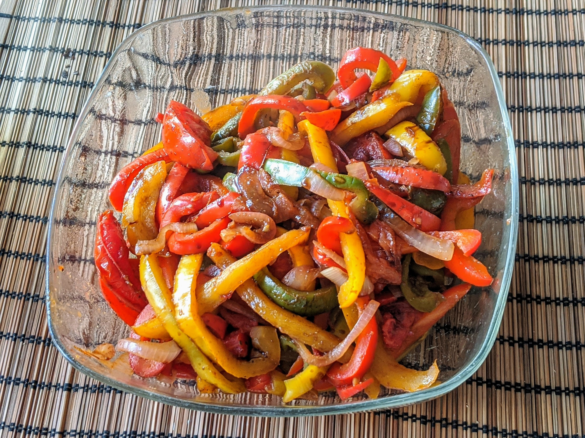

Salade tiède de poivrons au cumin

Pour 5 personnes :
- Trois poivrons (par exemple, un jaune, un orange et un rouge)
- Quatre tomates
- Deux oignons rouges
- Deux cuillères à soupe de sucre en poudre
- Deux bonnes cuillères à soupe de vinaigre
- Deux bonnes cuillères à café de cumin
- Huile d'olive
- Laver, épépiner, et couper les poivrons en lanières. Les faire revenir dans de l'huile d'olive au fond d'une poêle, à feu moyen.
- Éplucher et couper les oignons en lamelles. Les rajouter avec le sucre dans la poêle, une fois que les poivrons sont un peu ramollis.
- Laver et couper les tomates en quartiers. Les ajouter dans la poêle lorsque les oignons sont translucides, et les laisser 3-4 minutes maximum à feu doux. Il ne faut pas qu'elles cuisent complètement !
- Verser la préparation dans un saladier, ajouter le cumin et le vinaigre, mélanger délicatement. Laisser refroidir une vingtaine de minutes, servir tiède.
Remarque : en cas de toute, c'est mieux de cuire trop peu que trop.
Retour à la liste des recettes